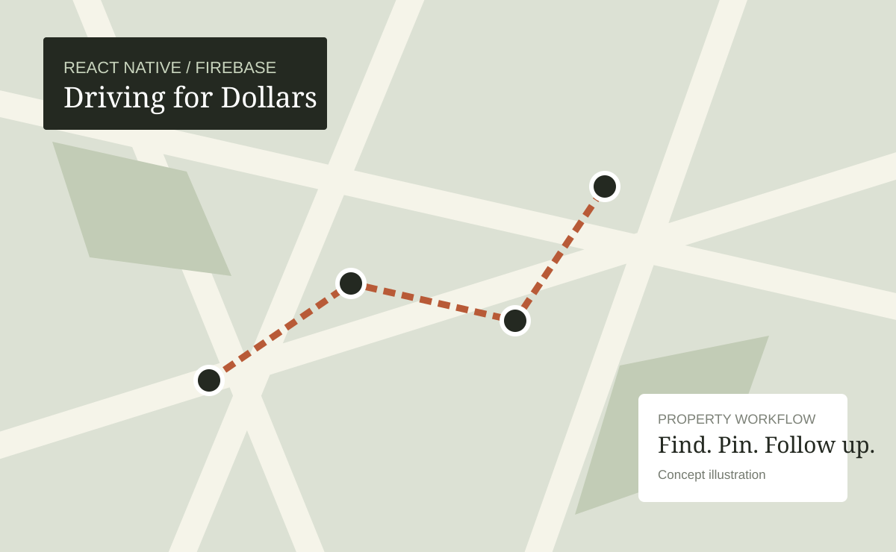

Software development
Projects.
Client work, personal projects, and earlier web development projects. Open a project to read about its purpose, my role, and the work involved.

Client project · 2021
Driving for Dollars
A mobile app for finding properties, tracking routes, and keeping leads in one place.
See the project
Personal project · In development
Northstar / AI Consultant Bot
A business analysis concept with financial dashboards, a data explorer, and evidence-based questions.
See the projectEarlier projects
From the archives
Early web projects, kept here as a record of learning.

Early web project · Archive
Mayer Jewelry
An early storefront build, from product categories and image layouts to responsive navigation.
See the projectEarly web project · Archive
The Weather Site
A weather interface built while learning front-end development, location data, and responsive design.
See the project